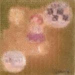

A2 日本の米
A3 家族�E肖像
A4 先天よい孁E/u>
A5 来たるべき世界

B1 �E�年殺ぁE/u>
B2 屋根の上�E猫とボク
B3 労働老E
B4 KEEP CHEEP TRICK
B5 バカボンと戦慁EpartⅡ -Staress �E�EバカボンBlack partⅡ

 ←クリチE��するとiTunesが開き、そのまま『バカボンの頭脳改革 (Remastering)』�Eダウンロード�Eージに飛�Eます。価格は1200冁E��例によって「バカボンと戦慁E-Staress �E�E
バカボンBlack」「バカボンと戦慁EpartⅡ -Staress �E�EバカボンBlack partⅡ」「来たるべき世界」�E3曲は未収録。コントも未収録っぽぁE��Ebr>
←クリチE��するとiTunesが開き、そのまま『バカボンの頭脳改革 (Remastering)』�Eダウンロード�Eージに飛�Eます。価格は1200冁E��例によって「バカボンと戦慁E-Staress �E�E
バカボンBlack」「バカボンと戦慁EpartⅡ -Staress �E�EバカボンBlack partⅡ」「来たるべき世界」�E3曲は未収録。コントも未収録っぽぁE��Ebr>
A1 バカボンと戦慁E-Staress �E�EバカボンBlack
A2 日本の米
A3 家族�E肖像
A4 先天よい孁E/u>
A5 来たるべき世界
B1 �E�年殺ぁE/u>
B2 屋根の上�E猫とボク
B3 労働老E
B4 KEEP CHEEP TRICK
B5 バカボンと戦慁EpartⅡ -Staress �E�EバカボンBlack partⅡ
|
空手バカボン 歌唱Ⅰ�E�大槻 KENZI 演 奏：ウチダユウイチロウ 歌唱Ⅱ�E�ケラ |
Producer�E�空手バカボン Recorded and Mixed at ぺんた吉祥寺ノ�EスサイチEbr> Illustrater�E�桜沢エリカ Photgrapher�E�有賀幹夫 |